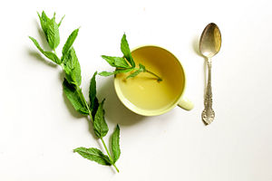

Čajevi
Povijest čaja
Prema legendi čaj je otkrio kineski car Shen-Nung 2737. godine prije Krista. Bio je vješt vladar, kreativan znanstvenik i pokrovitelj umjetnosti. Oprezan i dalekovidan, radi zdravstvene preventive zahtijevao je da sva voda prije pića bude prokuhana. Jednog ljetnog dana krenuo je u posjetu jednoj od svojih pokrajina. Na pola puta zaustavio je poslugu i naredio joj da mu prokuhaju vodu za piće. U tom trenutku je vjetrom nošeno osušeno lišće iz obližnjeg grma palo u kipuću vodu i zamutilo ju smeđom bojom. Kao znanstvenik, Shen Nung nije mogao odoljeti, a da ne proba novonastalu tekućinu čarobna mirisa. Znatiželjni je car bio oduševljen čajem, a novi je napitak odmah krenuo u osvajanje svijeta.
Čaj je iz Kine u Japan došao preko budističkog svećenika Yeiseija koji je u Japanu poznat i kao “otac čaja”. U Europu je stigao preko Portugala, 1560. godine, te od tad postaje jako popularan, a 1860. se prvi put spominje dodavanje mlijeka u čaj. Engleski “čaj u pet”, koji je više mit nego stvarnost, pojavio se kada se Ana, vojvotkinja od Bedforda, dosjetila organizirati čajanke na kojima bi se služili sendviči i slatkiši. Rusi također imaju dugu tradiciju pijenja čaja. 1618. godine u kineskoj ambasadi u Moskvi, caru Alekseju je poslužen ovaj napitak. U početku je bio skup, jer su ga specijalne karavane dovozile iz Kine, ali do kraja osamnaestog stoljeća svaka ruska kuća imala je samovar, vrstu velikog čajnika iz koga se cijeli dan pio čaj. Rusi su uvijek pili jak čaj, zaslađen šećerom, medom ili džemom, a nakon vodke, čaj je drugo rusko nacionalno piće. Poduzetni su Amerikanci, za vrijeme prvog američkog svjetskog sajma, sasvim slučajno otkrili i patentirali hladni čaj. Naime, jedan je poduzetnik svojim posjetiteljima planirao servirati čaj, no zbog velikih vrućina, nitko nije bio zainteresiran za njegovu ponudu, pa se dosjetio u skuhani čaj ubaciti veliku količinu leda, čime ga je rashladio. Tako je nastao “Ice Tea” te postao veliki hit sajma, a i šire. Nekoliko godina kasnije, Amerikanac Thomas Sullivan razvija koncept “čaja u vrećicama”. Kao prodavač čaja, u gazu je nježno ovio svaki promotivni primjerak čaja, koji je dostavljao u restorane za probu. Prepoznao je sjajnu marketinšku priliku nakon što je shvatio da vlasnici restorana čajeve služe neodmotane iz pakiranja koje im je dostavio, kako bi izbjegli nered mokrih čajnih listića po kuhinji.
